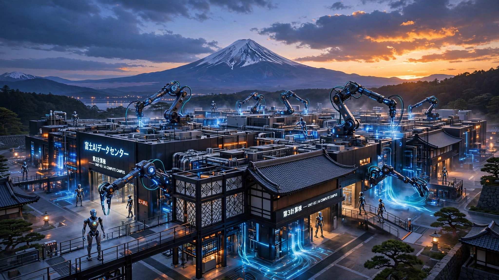

Every Country Is Buying GPUs for Chatbots. Japan Just Bought 27,500 for Robots.
Japan’s Noetra consortium ordered 27,500 Nvidia Rubin GPUs to build the world’s first national AI factory purpose-built for physical AI: foundation models for robots, not language models for chatbots. The demographic math behind the bet is stark. Japan loses 700,000 working-age people every year and currently deploys fewer than 50,000 robots to replace them.

One hundred and forty megawatts. That is the power draw of the AI factory that Nvidia and Japan’s Noetra consortium announced on Wednesday—enough electricity to run roughly 110,000 homes. Every watt goes toward training foundation models for robots, autonomous systems, and physical AI in manufacturing and healthcare. No chatbot, no cloud summarizer, no enterprise search widget.
That makes this the first time a national government has committed dedicated AI infrastructure to the physical world rather than the digital one.
Noetra, backed by SoftBank, Sony, and Honda, will install 27,500 Nvidia Rubin GPUs and 13,750 Vera CPUs (roughly the size of a top-10 hyperscaler training cluster) in a facility architected on Nvidia’s DSX platform. Construction begins April 2027, operations in June 2028. Pretrained weights will be made broadly available to Japanese companies and developers. “Japan cannot outsource its national intelligence,” Jensen Huang said in Tokyo, and he is right, but 27,500 GPUs against 11 million missing humans is a ratio that deserves scrutiny.
The Gap Nobody Can Close at Current Speed
Japan’s working-age population peaked at 87 million in 1995. It has been falling ever since. Decline accelerated through the 2020s, and Recruit Works Institute projects the country will lack 11 million workers by 2040, a deficit roughly the size of Ohio’s entire labor force that no combination of immigration reform, fertility incentives, or retirement-age extensions has come close to addressing. Working-age people now constitute 59.6% of the total population, down from 69.8% at the 1995 peak and well below the OECD average of 64.8%. Fourteen consecutive years of population decline.
Now run the robot math. Japan ranks among the most roboticized nations on earth, but even its density leaves an enormous gap:
| Country | Robots per 10,000 Mfg. Workers |
|---|---|
| South Korea | 1,220 |
| Singapore | 818 |
| Germany | 449 |
| Japan | 446 |
| United States | 295 |
Source: International Federation of Robotics, 2024
Japan’s operational stock stands at roughly 452,000 industrial robots, the largest fleet in the world after China (approximately 1.8 million) and 50% larger than the United States’ roughly 310,000 units. Annual installations run approximately 46,000, based on Japan’s historical share of global deployments.
Here is the arithmetic that should keep METI officials awake. Japan loses approximately 700,000 working-age people per year and deploys approximately 46,000 robots, a raw replacement rate of 6.6%: for every fifteen workers who vanish from the labor force, one robot arrives.
| Scenario | Install Rate | Multiplier | Eff. Workers Replaced/yr | Years to Close 11M Gap |
|---|---|---|---|---|
| Current pace | 46,000 | 1x | 46,000 | 239 |
| Current + productivity | 46,000 | 3–5x | 138K–230K | 48–80 |
| Triple rate + 5x | 138,000 | 5x | 690,000 | 16 |
Not viable.
The picture improves slightly when you account for the fact that industrial robots replace more than one worker each. A commonly cited range is 3 to 5 worker-equivalents per unit on a production line, which means 46,000 installations cover roughly 140,000 to 230,000 worker-equivalents per year, leaving a net annual deficit of at least 470,000. And this counts only manufacturing: nursing homes, warehouses, and convenience stores, where Japan’s labor shortage bites hardest, have nearly zero robot penetration. Even with the generous 5x multiplier and triple the current installation rate, closing the gap still takes 16 years. Optimistic by any standard.
What Everyone Else Is Building
To grasp why Japan’s bet stands alone, look at what the rest of the world is spending AI money on:
| Country / Entity | Amount (USD) | Funding Type | What It Builds |
|---|---|---|---|
| Abu Dhabi (MGX + OpenAI) | $100B+ | Sovereign fund | Cloud data centers, language models |
| Saudi Arabia (PIF + Google/AWS/Oracle) | $40B fund + $30B+ in DCs | Sovereign fund + JVs | Cloud infrastructure, enterprise AI |
| United Kingdom | ~$640M | Gov’t grant | Sovereign AI fund, public-sector chatbots |
| European Union (Digital Europe + Apply AI) | ~$2.5B | Gov’t grant | R&D grants, digital infrastructure |
| Japan (Noetra / FRONTia) | $2–3B est. | Industrial consortium | Physical AI: robot foundation models |
All digital except Japan. Every dollar aimed at cloud platforms, language models, and enterprise chatbots. The logic is straightforward: digital AI is faster to deploy, easier to procure, and carries less political risk than physical automation, which is precisely why it does nothing for a country hemorrhaging 700,000 workers per year from its factory floors, hospital wards, and logistics networks.
Japan’s FRONTia Project is different because Japan’s crisis is different. Japan is not short on digital services but on human bodies, and no chatbot fills a nursing home shift while no language model drives a forklift through an aging Nagoya warehouse at 3 a.m. Japan needs AI that can move things, and FRONTia is the first infrastructure program built to deliver it.
“Physical AI is a matter of national urgency,” Sho Yamanaka of Salesforce Ventures told TechCrunch. Not a buzzword. Survival.
The Hardware-Software Paradox
Japan dominates robot hardware, unambiguously. Fanuc, Yaskawa, Kawasaki, Denso, Epson, and Nachi collectively account for roughly 45% of global industrial robot production, and as of 2018 Japan exported more industrial robots than the next five largest exporters combined, a lead that has narrowed as China scales production but has not vanished.
Yet Japan produces zero of the world’s competitive AI foundation models, not a single one. Consider the paradox: the country that builds more robot bodies than anyone else has no competitive capability in building robot brains, as if the world’s largest automaker could manufacture every part of a car except the engine, which is precisely what FRONTia is designed to fix.
METI’s March 2026 AI Robotics Strategy set an explicit target: capture 30% of the global AI robotics market by 2040, an opportunity that RBC analyst Tom Narayan estimates at $133 billion, putting Japan’s share at roughly $40 billion. Narayan’s longer-term projection, 350 million robots sold annually at $25,000 each by 2050 for a $9 trillion industry, deserves scrutiny. The global industrial robotics market today is roughly $16 billion. For context, the entire global auto industry produces about 85 million vehicles per year; 350 million robots would be four times that volume, requiring manufacturing scale that does not exist anywhere today. But even at one-tenth of Narayan’s figure, whoever owns the foundation models that make those robots useful owns the margin layer above the hardware. Japan currently cedes that entire layer to American and Chinese AI companies.
The Strongest Case Against
Sovereign AI has a spectacularly ugly track record. Japan’s own Fifth Generation Computer Systems project spent ¥50 billion (roughly $700 million in today’s dollars) between 1982 and 1992 on a Prolog-based AI architecture that was obsolete before it shipped its final report. France spent over €2 billion on its national AI strategy and incubated Mistral AI without producing a model that competes at frontier scale, and European AI infrastructure investments more broadly have yielded nothing that competes with American or Chinese alternatives at the model layer, a pattern so consistent that it looks less like bad luck than like a structural feature of how governments build technology platforms.
And here is the deeper objection: Nvidia itself already offers physical AI foundation models, including Cosmos for world simulation, Isaac for robot manipulation, and GR00T for humanoid control, all available today, all improving rapidly, and all free to deploy on Japanese robot hardware. Noetra’s pretrained weights would enter a market where its own chip vendor is also its most formidable competitor, offering free models that Japanese manufacturers could deploy tomorrow without waiting two years for a sovereign alternative to come online. Japan could deploy American-built robot brains on Japanese-built robot bodies, the same way it runs Android on Japanese phones and AWS under Japanese enterprise workloads, avoiding the billions in upfront compute investment and the two-year gap before any indigenous model ships. Building a national physical AI stack begins to look like building a national search engine when Google already exists.
But data specificity may be the rebuttal that matters, and here Japan has an asset that no American lab can replicate, because physical AI models are only as good as the physical data they train on. Toyota alone generates more than a petabyte of factory-floor sensor data annually, representing decades of Toyota Production System workflows logged at sub-second granularity across thousands of suppliers, a corpus that constitutes the world’s largest real-world robotics training dataset. Fanuc has accumulated 40 years of robotic arm telemetry from over 800,000 installed units worldwide. Honda’s humanoid research program, which predates the deep learning era by two decades, carries motion-capture libraries of human-robot interaction that simply do not exist in Western datasets.
A foundation model trained on Nvidia’s publicly available datasets and internet-scraped video can learn to manipulate objects in simulation. A model trained on Toyota’s actual production data can learn to manipulate the specific parts, in the specific sequences, at the specific tolerances that Japanese manufacturing demands. Whether that domain advantage translates into a durable competitive moat rather than a marginal improvement over generic models is the $2–3 billion question. The answer is not yet known.
Limitations
Rubin GPU pricing is not publicly disclosed; the $30,000 per-unit estimate used in the $2–3 billion investment figure follows B200 pricing trajectories and may be significantly off. Japan’s annual robot installation figure of 46,000 is estimated from historical global share data, not a precise count, and the 11-million-worker shortfall is Recruit Works Institute’s central projection; other estimates range from 9 to 15 million. The robot-to-worker substitution ratio of 3–5x is a commonly cited industry range for manufacturing but varies enormously by sector and task complexity. Noetra has not disclosed total investment cost. The Narayan $9 trillion long-term market projection is a single analyst’s estimate and should not be treated as a forecast.
What You Can Do
FRONTia will release open pretrained weights when the facility comes online in mid-2028. Companies building robots or robot components should start planning integration now, because competitors with early access to Japanese physical AI models will move into elder care, logistics, and light manufacturing before the models hit general availability. The 27,500-GPU cluster is large enough to produce genuinely competitive foundation models, not a token research project.
Investors who track robotics usually track hardware: Fanuc’s order book, Yaskawa’s margins, KUKA’s acquisition pipeline. FRONTia reshuffles the value stack. The foundation model layer is where margin concentrates in software-defined industries, and Japan closing its model gap would change competitive dynamics across its entire robotics supply chain. A $40 billion government-backed market-share target backed by sovereign compute is a demand signal that the traditional hardware-first analysis of Japanese robotics is about to become obsolete.
Every aging society should be watching. Japan is running the world’s first real-scale experiment in using physical AI to offset demographic decline. Results become visible around 2029 as FRONTia models enter deployment. South Korea, Germany, and Italy face similar trajectories on a 10-to-20-year lag. What Japan learns will shape their policy choices.
The Bottom Line
Japan ordered 27,500 GPUs. Not enough. Enormous in ambition, comically inadequate for the scale of the problem. The compute is real: 140 megawatts of physical AI infrastructure, enough to power a small city, backed by Japan’s most formidable industrial consortium and the explicit policy machinery of METI. But the gap between 46,000 robots per year and 700,000 missing workers per year is not a software problem; it is a manufacturing capacity problem, a deployment logistics problem, and a regulatory acceptance problem, and all three remain unsolved. Japan builds more robot bodies than any country on earth and is now building the brains to match, pouring compute into a challenge that no other nation has yet acknowledged requires dedicated physical AI infrastructure rather than borrowed cloud capacity. Whether it can build both fast enough is the most consequential industrial experiment of the next decade.